Canada: Ontario
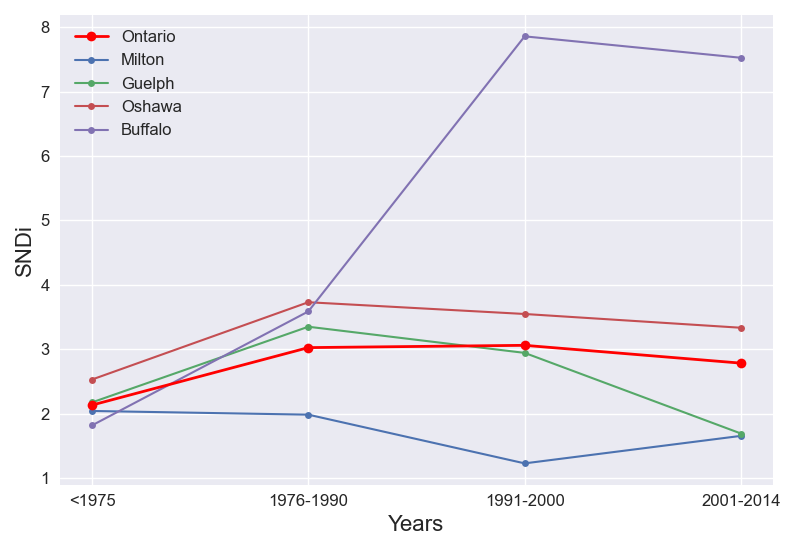Ontario : Detroit
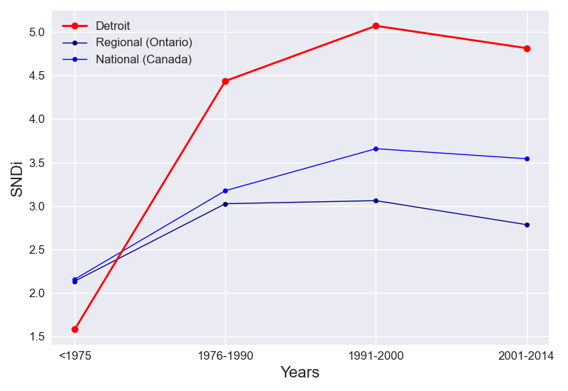Overall, the stock level of sprawl in Detroit is 2.3. In Detroit, new street layouts initially increased in level of sprawl, until the peak in 1991-2000.
To date, Detroit is the 6th-most sprawling city out of the 23 cities in Ontario. Its ranking has worsened overall. In <1975, it ranked 17th, ranked 1st in 1976-1990 and ranked 4th in 1991-2000 and ranked 3rd in 2001-2014.
Ontario : Thunder Bay
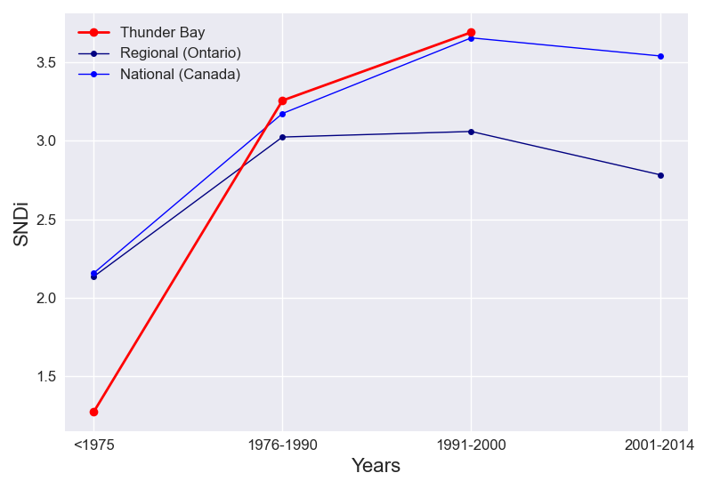Overall, the stock level of sprawl in Thunder Bay is 1.4. In <1975, the SNDi was 1.27. In 1976-1990, the SNDi was 3.26. In 1991-2000, the SNDi was 3.69. Data was not available for the following time periods: ['2001-2014'].
To date, Thunder Bay is the 23rd-most sprawling city out of the 23 cities in Ontario. Its ranking has worsened overall. In <1975, it ranked 21st, ranked 9th in 1976-1990 and ranked 8th in 1991-2000 and There was no ranking in these years due to unavailable data: ['2001-2014']
Ontario : Sarnia
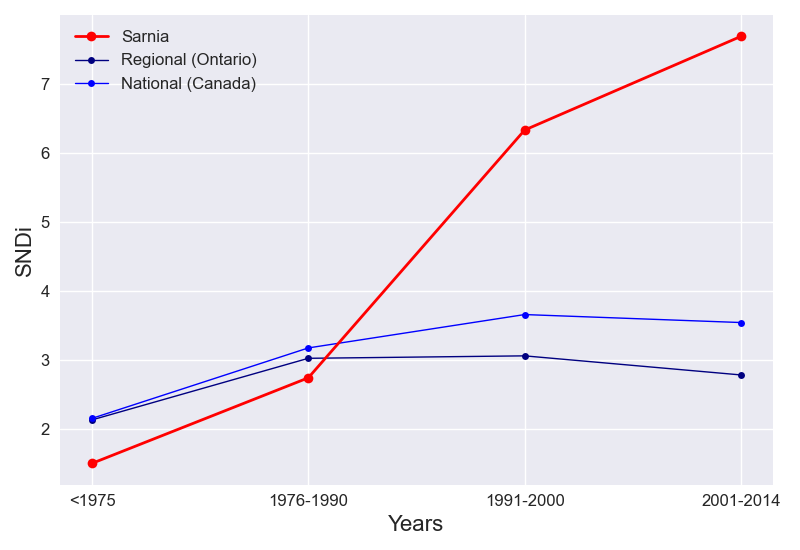Overall, the stock level of sprawl in Sarnia is 2.17. New street construction in Sarnia has been increasing in sprawl over time.
To date, Sarnia is the 9th-most sprawling city out of the 23 cities in Ontario. Its ranking has worsened overall. In <1975, it ranked 18th, ranked 16th in 1976-1990 and ranked 3rd in 1991-2000 and ranked 1st in 2001-2014.
Ontario : London
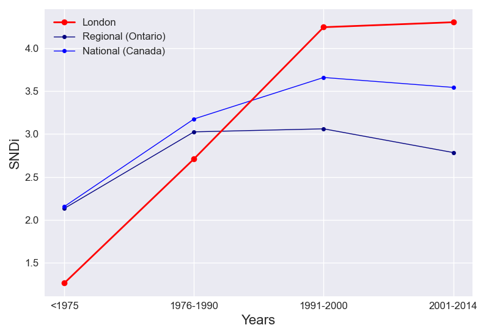Overall, the stock level of sprawl in London is 2.46. New street construction in London has been increasing in sprawl over time. This increase has slowed: between <1975 and 1976-1990, SNDi rose by 1.45 points, but between 1991-2000 and 2001-2014, it rose by just 0.06.
To date, London is the 4th-most sprawling city out of the 23 cities in Ontario. Its ranking has worsened overall. In <1975, it ranked 22nd, ranked 18th in 1976-1990 and ranked 6th in 1991-2000 and ranked 8th in 2001-2014.
Ontario : Sault Ste. Marie
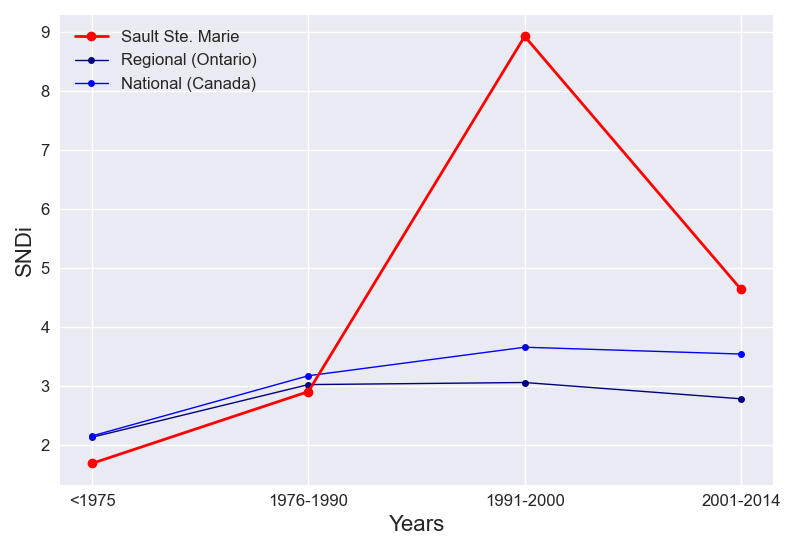Overall, the stock level of sprawl in Sault Ste. Marie is 1.74. In Sault Ste. Marie, new street layouts initially increased in level of sprawl, until the peak in 1991-2000.
To date, Sault Ste. Marie is the 19th-most sprawling city out of the 23 cities in Ontario. Its ranking has worsened overall. In <1975, it ranked 15th, ranked 13th in 1976-1990 and ranked 1st in 1991-2000 and ranked 5th in 2001-2014.
Ontario : Kitchener

Overall, the stock level of sprawl in Kitchener is 1.96. In Kitchener, new street layouts initially increased in level of sprawl, until the peak in 1976-1990.
To date, Kitchener is the 13th-most sprawling city out of the 23 cities in Ontario. Its ranking has improved overall. In <1975, it ranked 16th, ranked 14th in 1976-1990 and ranked 19th in 1991-2000 and ranked 17th in 2001-2014.
Ontario : Brantford
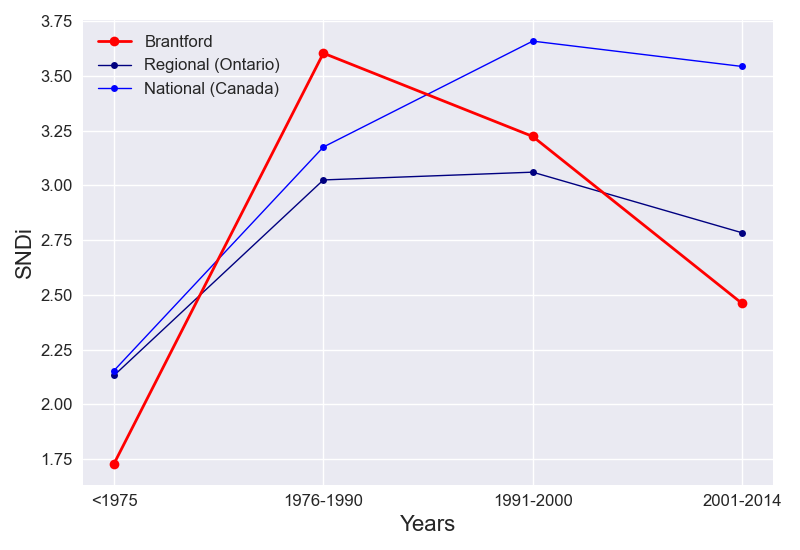Overall, the stock level of sprawl in Brantford is 1.94. In Brantford, new street layouts initially increased in level of sprawl, until the peak in 1976-1990.
To date, Brantford is the 14th-most sprawling city out of the 23 cities in Ontario. Its ranking has improved overall. In <1975, it ranked 14th, ranked 5th in 1976-1990 and ranked 11th in 1991-2000 and ranked 15th in 2001-2014.
Ontario : Cambridge
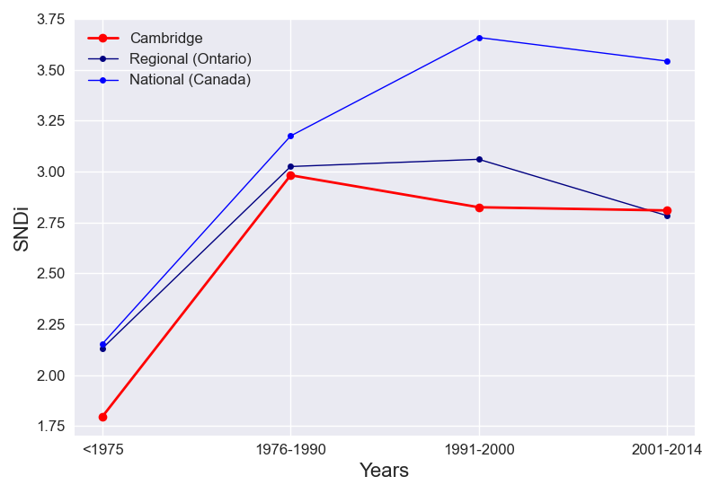Overall, the stock level of sprawl in Cambridge is 2.12. In Cambridge, new street layouts initially increased in level of sprawl, until the peak in 1976-1990.
To date, Cambridge is the 10th-most sprawling city out of the 23 cities in Ontario. Its ranking has improved overall. In <1975, it ranked 11th, ranked 12th in 1976-1990 and ranked 14th in 1991-2000 and ranked 13th in 2001-2014.
Ontario : Guelph
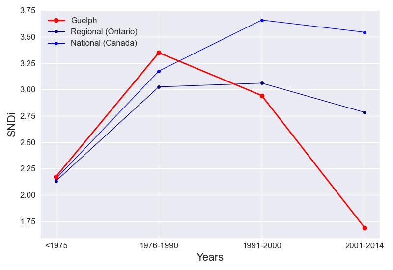Overall, the stock level of sprawl in Guelph is 2.34. In Guelph, new street layouts initially increased in level of sprawl, until the peak in 1976-1990.
To date, Guelph is the 5th-most sprawling city out of the 23 cities in Ontario. Its ranking has improved overall. In <1975, it ranked 5th, ranked 8th in 1976-1990 and ranked 13th in 1991-2000 and ranked 18th in 2001-2014.
Ontario : Toronto
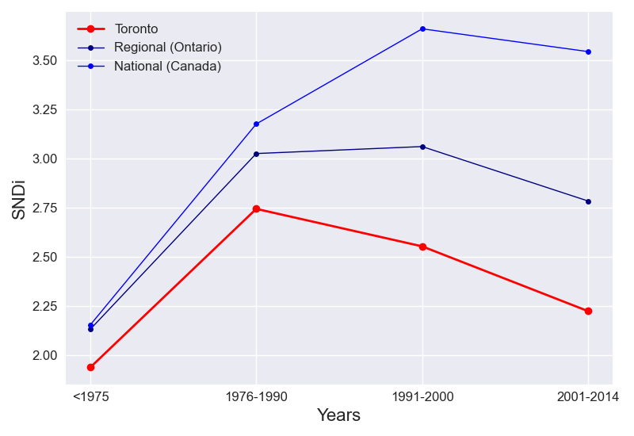Overall, the stock level of sprawl in Toronto is 2.21. In Toronto, new street layouts initially increased in level of sprawl, until the peak in 1976-1990.
To date, Toronto is the 8th-most sprawling city out of the 23 cities in Ontario. Its ranking has improved overall. In <1975, it ranked 8th, ranked 15th in 1976-1990 and ranked 18th in 1991-2000 and ranked 16th in 2001-2014.
Ontario : Milton
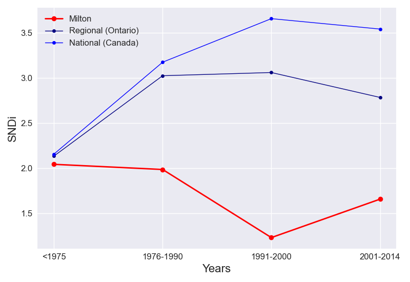Overall, the stock level of sprawl in Milton is 1.75. In Milton, the level of sprawl in new street layouts dipped, increasing in 1991-2000 onwards.
To date, Milton is the 18th-most sprawling city out of the 23 cities in Ontario. Its ranking has improved overall. In <1975, it ranked 7th, ranked 22nd in 1976-1990 and ranked 22nd in 1991-2000 and ranked 19th in 2001-2014.
Ontario : St. Catharines
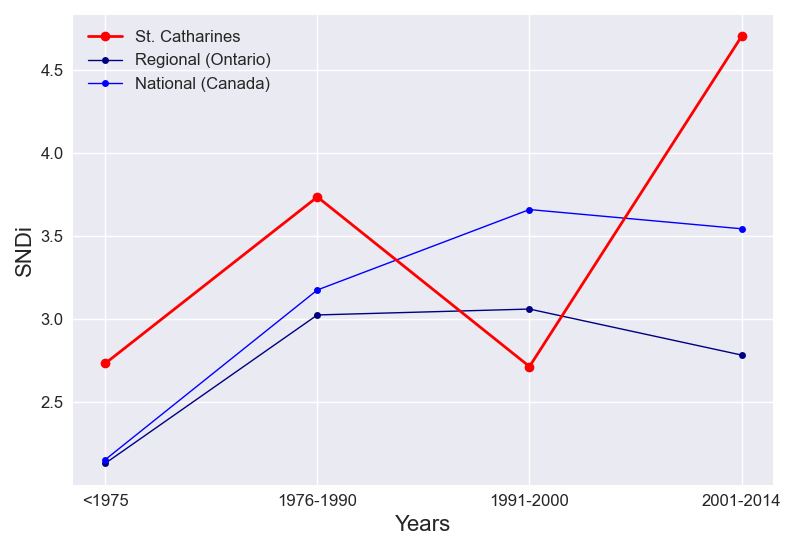Overall, the stock level of sprawl in St. Catharines is 2.8. In <1975, the SNDi was 2.73. In 1976-1990, the SNDi was 3.73. In 1991-2000, the SNDi was 2.71. In 2001-2014, the SNDi was 4.7.
To date, St. Catharines is the 3rd-most sprawling city out of the 23 cities in Ontario. Its ranking has improved overall. In <1975, it ranked 1st, ranked 3rd in 1976-1990 and ranked 15th in 1991-2000 and ranked 4th in 2001-2014.
Ontario : Niagara Falls
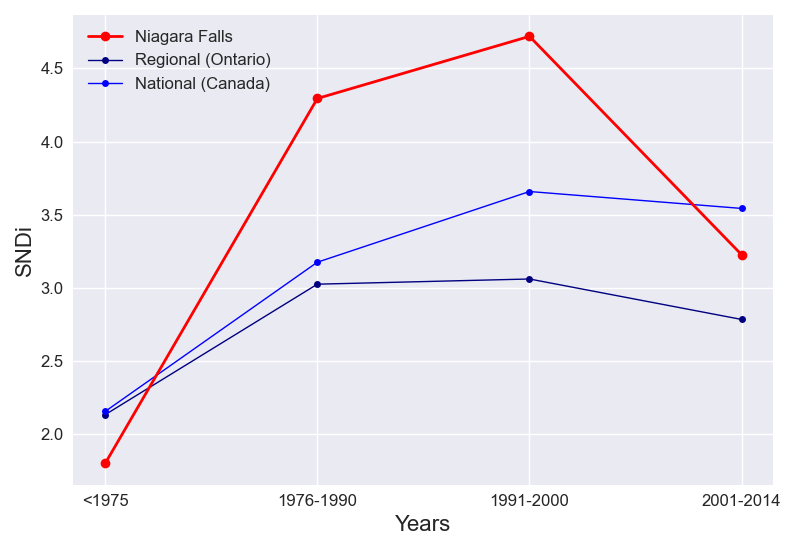Overall, the stock level of sprawl in Niagara Falls is 2.04. In Niagara Falls, new street layouts initially increased in level of sprawl, until the peak in 1991-2000.
To date, Niagara Falls is the 11th-most sprawling city out of the 23 cities in Ontario. Its ranking has improved overall. In <1975, it ranked 10th, ranked 2nd in 1976-1990 and ranked 5th in 1991-2000 and ranked 10th in 2001-2014.
Ontario : Buffalo
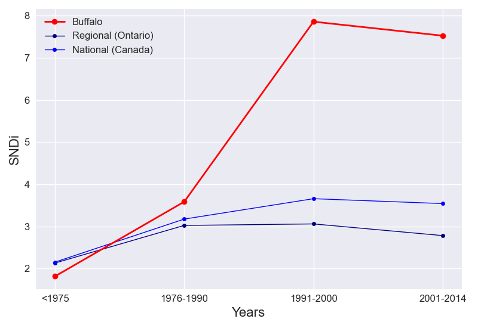Overall, the stock level of sprawl in Buffalo is 2.03. In Buffalo, new street layouts initially increased in level of sprawl, until the peak in 1991-2000.
To date, Buffalo is the 12th-most sprawling city out of the 23 cities in Ontario. Its ranking has worsened overall. In <1975, it ranked 9th, ranked 6th in 1976-1990 and ranked 2nd in 1991-2000 and ranked 2nd in 2001-2014.
Ontario : Newmarket

Overall, the stock level of sprawl in Newmarket is 2.86. In Newmarket, new street layouts initially increased in level of sprawl, until the peak in 1976-1990.
To date, Newmarket is the 2nd-most sprawling city out of the 23 cities in Ontario. Its ranking has improved overall. In <1975, it ranked 4th, ranked 10th in 1976-1990 and ranked 12th in 1991-2000 and ranked 12th in 2001-2014.
Ontario : Barrie
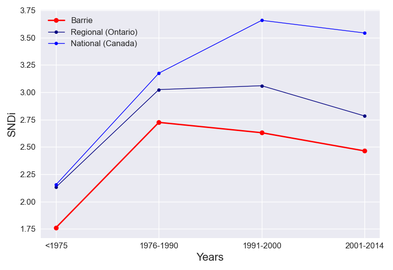Overall, the stock level of sprawl in Barrie is 2.26. In Barrie, new street layouts initially increased in level of sprawl, until the peak in 1976-1990.
To date, Barrie is the 7th-most sprawling city out of the 23 cities in Ontario. Its ranking has improved overall. In <1975, it ranked 12th, ranked 17th in 1976-1990 and ranked 17th in 1991-2000 and ranked 14th in 2001-2014.
Ontario : Oshawa
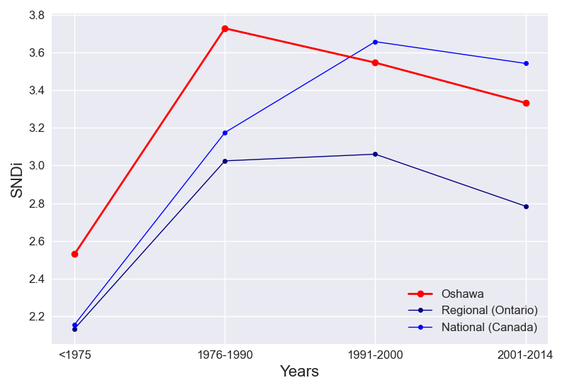Overall, the stock level of sprawl in Oshawa is 3.03. In Oshawa, new street layouts initially increased in level of sprawl, until the peak in 1976-1990.
To date, Oshawa is the 1st-most sprawling city out of the 23 cities in Ontario. Its ranking has improved overall. In <1975, it ranked 2nd, ranked 4th in 1976-1990 and ranked 10th in 1991-2000 and ranked 9th in 2001-2014.
Ontario : Peterborough
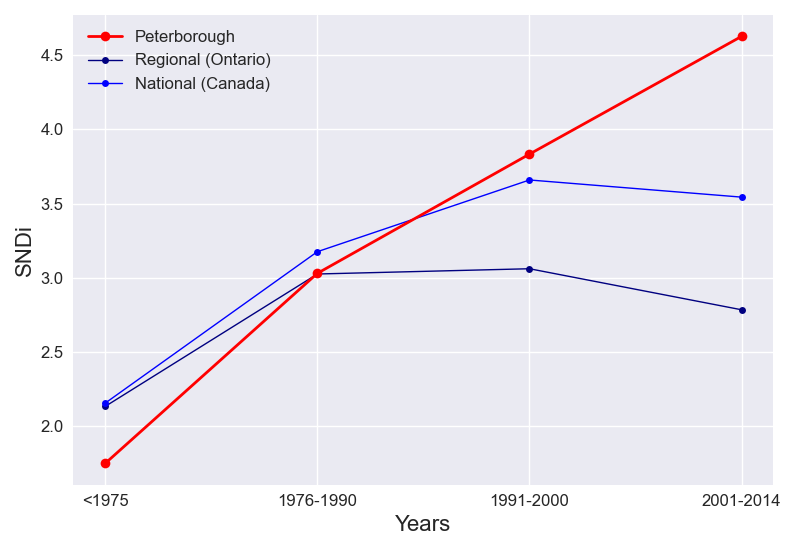Overall, the stock level of sprawl in Peterborough is 1.9. New street construction in Peterborough has been increasing in sprawl over time. This increase has slowed: between <1975 and 1976-1990, SNDi rose by 1.28 points, but between 1991-2000 and 2001-2014, it rose by just 0.79.
To date, Peterborough is the 15th-most sprawling city out of the 23 cities in Ontario. Its ranking has worsened overall. In <1975, it ranked 13th, ranked 11th in 1976-1990 and ranked 7th in 1991-2000 and ranked 6th in 2001-2014.
Ontario : Kingston
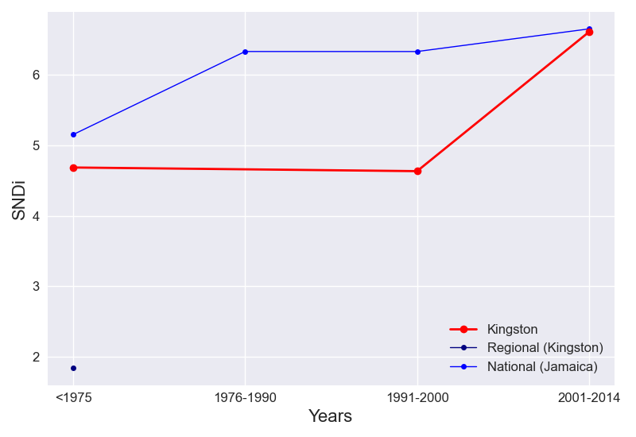Overall, the stock level of sprawl in Kingston is 4.69. In <1975, the SNDi was 4.69. In 1991-2000, the SNDi was 4.63. In 2001-2014, the SNDi was 6.61. Data was not available for the following time periods: ['1976-1990'].
To date, Kingston is the 1st-most sprawling city out of the 1 cities in Kingston. Its ranking has improved overall. In <1975, it ranked 1st, ranked 1st in 1991-2000 and ranked 1st in 2001-2014. There was no ranking in these years due to unavailable data: ['1976-1990']
Ontario : Kanata
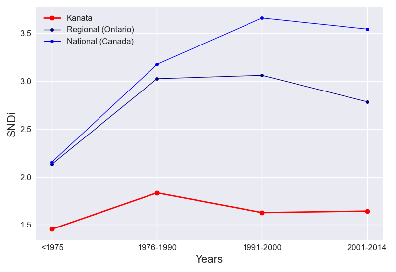Overall, the stock level of sprawl in Kanata is 1.69. In <1975, the SNDi was 1.45. In 1976-1990, the SNDi was 1.83. In 1991-2000, the SNDi was 1.63. In 2001-2014, the SNDi was 1.64.
To date, Kanata is the 20th-most sprawling city out of the 23 cities in Ontario. Its ranking has improved overall. In <1975, it ranked 19th, ranked 23rd in 1976-1990 and ranked 20th in 1991-2000 and ranked 20th in 2001-2014.
Ontario : Honey Gables
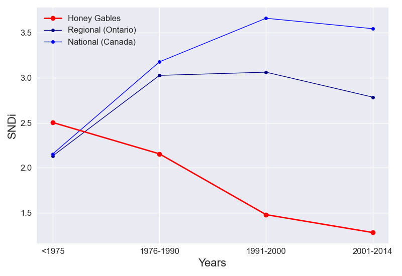Overall, the stock level of sprawl in Honey Gables is 1.67. New street construction in Honey Gables has been decreasing in sprawl over time.
To date, Honey Gables is the 21st-most sprawling city out of the 23 cities in Ontario. Its ranking has improved overall. In <1975, it ranked 3rd, ranked 20th in 1976-1990 and ranked 21st in 1991-2000 and ranked 21st in 2001-2014.
Ontario : Ottawa
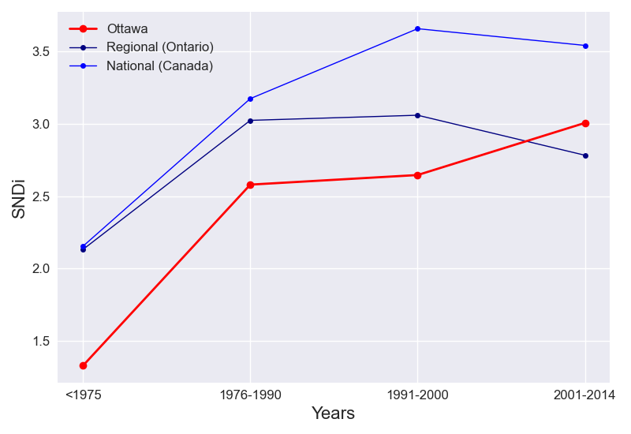Overall, the stock level of sprawl in Ottawa is 1.57. New street construction in Ottawa has been increasing in sprawl over time. This increase has slowed: between <1975 and 1976-1990, SNDi rose by 1.25 points, but between 1991-2000 and 2001-2014, it rose by just 0.36.
To date, Ottawa is the 22nd-most sprawling city out of the 23 cities in Ontario. Its ranking has worsened overall. In <1975, it ranked 20th, ranked 19th in 1976-1990 and ranked 16th in 1991-2000 and ranked 11th in 2001-2014.
Ontario : Orléans
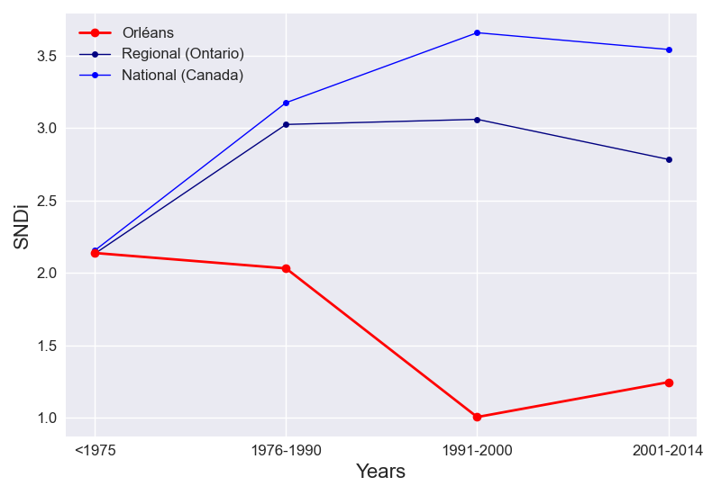Overall, the stock level of sprawl in Orléans is 1.78. In Orléans, the level of sprawl in new street layouts dipped, increasing in 1991-2000 onwards.
To date, Orléans is the 16th-most sprawling city out of the 23 cities in Ontario. Its ranking has improved overall. In <1975, it ranked 6th, ranked 21st in 1976-1990 and ranked 23rd in 1991-2000 and ranked 22nd in 2001-2014.